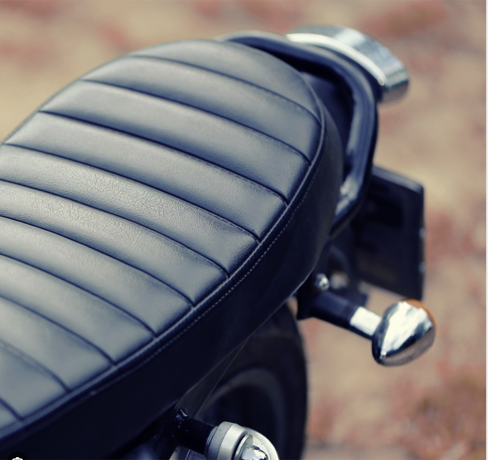
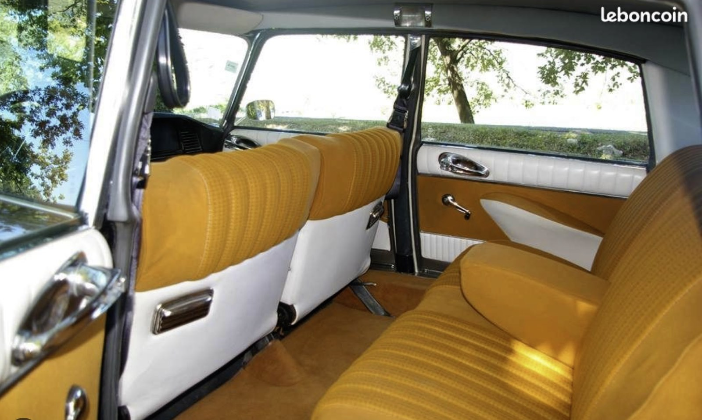
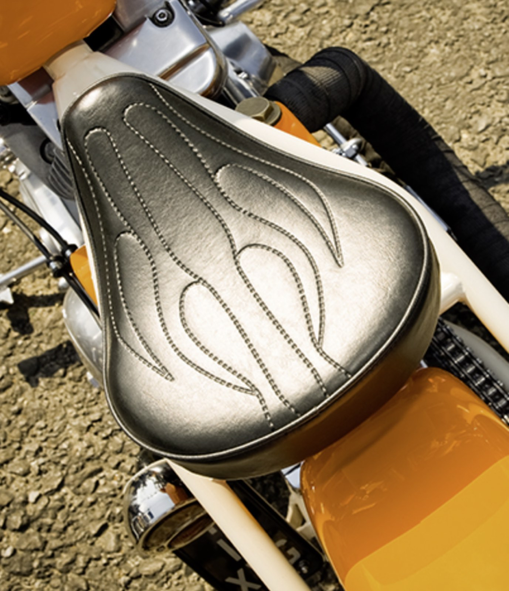
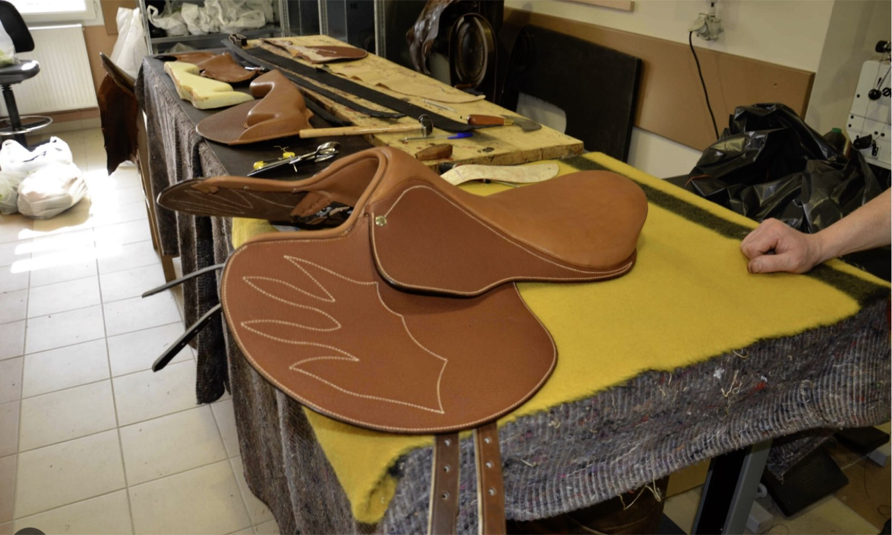
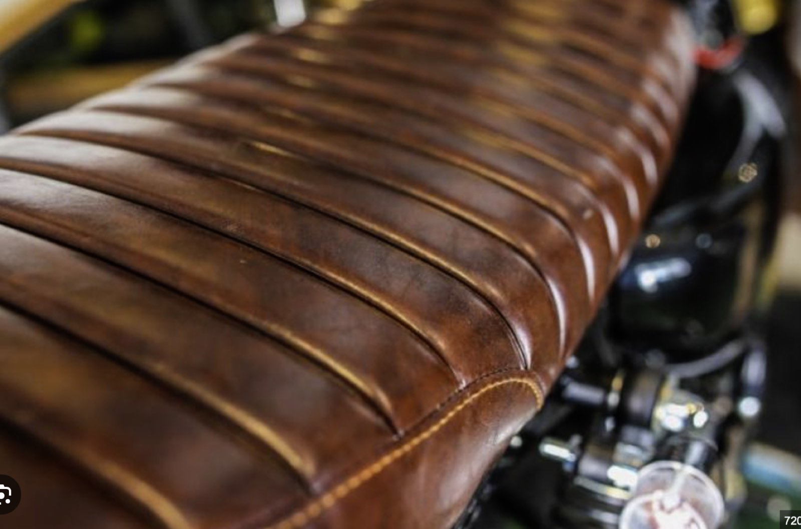

Galerie atelier
Realisations de sellerie auto et moto
Cette galerie presente une selection de projets de restauration et de personnalisation realises en atelier: selles moto, interieurs auto et finitions cuir sur mesure.





Un projet de sellerie a restaurer ?
Decrivez votre vehicule et vos attentes depuis la page contact pour recevoir une estimation.